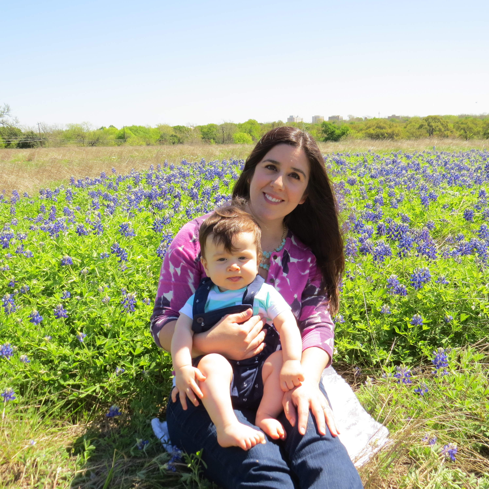

About Me
 I am currently employed by Presidio. I started as a Program Manager and moved to Director of Engineering Operations. I have a BA in Marketing from the Univeristy of New Mexico in Albuerque. My introduction to the software world started in 2008, when I became employed at AdRevolution. I learned to write html and css using Dreamweaver to create over 30 websites. I later moved to creating websites with WordPress.
Currently, I manage Operations for our Engineering team, which also includes the QA Team, Release Management, Resource Management, and Vendor Management. I manage a $4 mil budget for our team.
When I'm not working or studying, I like to spend time with my family bike riding, hiking, and working on puzzles. We live on the east side of Austin and love it. We frequent El Chillito quite often. My favorite coffee shops include Halcyon, Houndstooth, and Bennu.